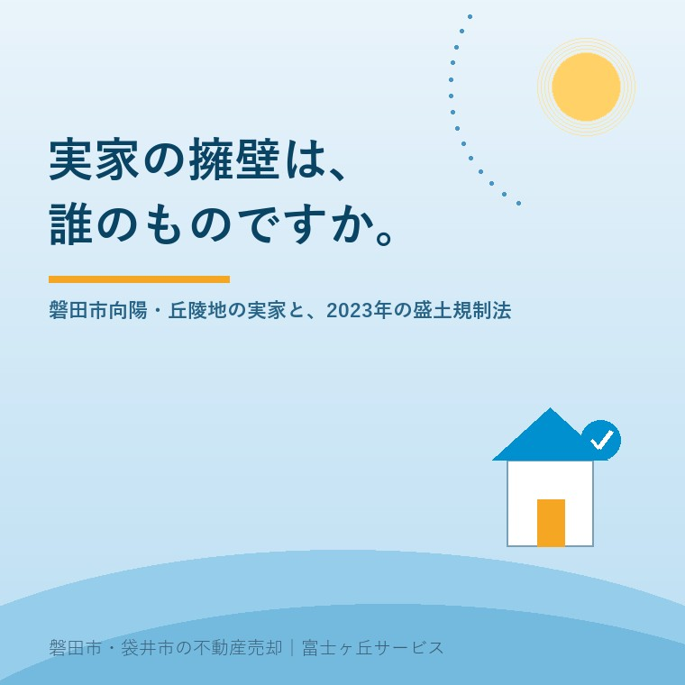

2026年8月11日｜カテゴリ：地域と不動産／コスト・税・制度

この記事の要点
Q. 磐田の丘の上にある実家を売ろうと思います。庭の下にコンクリートの擁壁があるのですが、これって売るときに問題になりますか。
A. 問題になり得ます。ただし、擁壁があること自体が問題なのではありません。「誰の所有か」「いつ造られ、許可や検査を受けているか」「今どういう状態か」が分からないことが問題になります。擁壁は、買主にとって将来の修繕費そのものだからです。造り替えれば数百万円かかることもあり、その不確実性が査定額から引かれます。さらに2023年5月26日に施行された盛土規制法は、盛土等が行われた土地について、土地所有者等が安全な状態に維持する責務を有することを明確にしました。静岡県（静岡市・浜松市を除く）では令和7年5月26日から規制が始まっています。確認の順番は、①擁壁は自分の敷地内か、隣地か、境界上か ②検査済証など造成時の書類があるか ③ひび・傾き・水抜き穴の詰まりがないかの3つです。磐田市・袋井市・森町では、介護施設の運営から不動産事業を始めた富士ヶ丘サービスのような「介護×不動産」専門の会社に相談するという選択肢があります。
磐田市には、平らな土地ばかりではなく、丘陵地があります。
市の東側、向笠や岩井のあたり。北の豊岡へ向かう山際。こうした一帯では、傾斜を削り、あるいは盛って平らにしてから家を建てています。その平らな面を支えているのが擁壁（ようへき）です。
ご実家の敷地の端に、コンクリートの壁や、大きな石を積んだ壁はありませんか。庭から見下ろすと下のお宅の屋根が見える、あるいは道路から見上げると自分の家が壁の上にある。そういう土地では、擁壁は「風景」ではなく「不動産の一部」です。
今日は、傾斜地にある実家を売る前に、擁壁について何を確認しておけばよいかを整理します。制度は、2026年8月11日時点で国土交通省・静岡県・磐田市が公表している内容に沿って書きます。
結論から言えば、買主にとって擁壁は「いずれ来る出費」だからです。
建物は、古ければ古いなりに価格が下がり、その分は納得して買えます。ところが擁壁は違います。見た目では寿命が分からず、造り替えが必要になったときの金額が大きい。しかも、隣地との関係で工事の自由度が低いことがあります。
だから買主側は、「分からない部分」を価格から差し引いて考えます。これは値切りではなく、リスクの見積もりです。
逆に言えば、売主が事前に情報を揃えておけば、その差し引きは小さくできます。「昭和◯年の造成で、検査済証がある」「点検して問題なしと言われている」という材料があるだけで、買主の不安の幅は狭くなります。以前実家の値段は「4つ」あるで書いたとおり、不動産の価格は「モノサシ」で決まりますが、不確実性は、どのモノサシでも減点材料になります。
最初に確認すべきは、所有です。傾斜地では、次の3つのパターンがあります。
| パターン | 状況 | 売却時の論点 |
|---|---|---|
| 自分の敷地内 | 擁壁が自分の土地の中に収まっている | 維持管理も費用も自分。いちばん話が単純 |
| 隣地の所有 | 下の土地の所有者が造った擁壁の上に、自分の敷地がある | 自分では造り替えられない。隣地との取り決めの有無が重要 |
| 境界上・共有 | 境界線をまたいで築造されている | もっとも揉めやすい。費用負担の合意が必要 |
確認の手がかりは、境界標の位置と擁壁の位置関係です。境界標が擁壁の内側にあるのか、外側にあるのか、それとも壁の天端（てんば）にあるのか。これで所有関係の見当がつきます。
境界標そのものが見当たらない場合は、見付の短冊形の敷地の記事にも書いたとおり、境界の確認から始めることになります。傾斜地では、平地よりもこの作業が重くなりがちです。土地の高低差があると、境界標が土に埋まったり、擁壁工事のときに動かされていたりするためです。
次に、造成時の記録です。ご実家に次の書類がないか探してみてください。
これらが揃っている土地は、それだけで有利です。「基準に沿って造られ、検査を受けている」ことが書面で示せるからです。
逆に、書類が何もない場合。それでも売却はできますが、買主側は「不明」として扱います。とくに古い石積みの擁壁（間知石を積んだもの、大谷石を使ったもの）は、現在の基準では認められない構造であることがあり、建て替えの際に造り替えが必要と判断される場合があります。
書類が見つからないときは、行政に記録が残っていることがあります。造成の許可や建築確認の記録について、磐田市の建築部局や静岡県の窓口に照会できる場合があります。ただし年代が古いと記録自体が無いこともあります。
専門家でなくても分かる範囲があります。ご実家に行かれたとき、次の点を見てください。写真を撮っておくと、後の相談が早くなります。
| 見る場所 | 気にする状態 |
|---|---|
| 壁面 | ひび割れ、とくに縦に走る大きな亀裂、コンクリートの剥離、鉄筋の露出 |
| 傾き | 壁が前に倒れてきていないか。上端が不揃いに波打っていないか |
| 水抜き穴 | 穴が土や落ち葉で詰まっていないか。水が抜けないと土圧が上がる |
| 擁壁の上 | 地面が沈んでいないか、塀や物置が擁壁の際に載っていないか |
| 擁壁の下 | 下の土地との間に隙間や崩れがないか。湧水の跡がないか |
いちばん見落とされるのが水抜き穴です。擁壁には、背面の水を逃がすための穴が設けられています。ここが詰まると、雨のたびに背後に水が溜まり、壁を押す力が増します。掃除するだけで負荷が減る場合があり、費用もほとんどかかりません。
空き家になって数年経つと、この穴が完全に塞がっていることがあります。売る売らないに関わらず、見ておく価値のある場所です。
制度の話をします。2022年5月に公布され、2023年（令和5年）5月26日に施行されたのが、宅地造成及び特定盛土等規制法（通称・盛土規制法）です。
この法律の要点を、売主の立場から3つに絞ります。
国土交通省の説明によれば、都道府県知事等が、宅地・農地・森林等の土地の用途にかかわらず、盛土等により人家等に被害を及ぼしうる区域を規制区域として指定する仕組みです。従来の宅地造成等規制法が「宅地」を主な対象としていたのに対し、土地の使われ方で線を引かなくなった点が大きな変更です。
国土交通省の資料には、「盛土等が行われた土地について、土地所有者等が安全な状態に維持する責務を有することを明確化」と示されています。
ここが、実家を相続した方に直接関わります。自分が造ったわけではない擁壁や盛土でも、その土地を所有している以上、安全な状態に保つ責務があるという整理だからです。「親の代の造成だから知らない」では済みません。
また、災害防止のために必要な場合、土地所有者等だけでなく、原因を作った者に対しても是正措置を命じ得るとされています。
規制区域の指定は都道府県等が行います。静岡県（静岡市・浜松市を除く）では、県全域が宅地造成等工事規制区域または特定盛土等規制区域のいずれかに指定され、令和7年（2025年）5月26日から盛土規制法による規制が開始されています。磐田市もこの対象です。
さらに静岡県は施行条例で許可対象規模の引下げを行っています。つまり、全国一律の基準より小さい工事でも許可が必要になる場合があるということです。
売却の実務でどう効くか。買主が土地を買った後に造成や擁壁の造り替えを計画する場合、許可の要否が判断材料になります。「買ってから自由に造成できる土地」と「許可手続きが必要な土地」では、買主の見方が変わります。詳しい適用範囲は静岡県の担当窓口でご確認ください。
もうひとつ、磐田市が公開している情報があります。大規模盛土造成地マップです。
市の公表内容によれば、磐田市内の該当箇所は3地区で、すべて谷埋め型（腹付け型はなし）とされています。谷埋め型の定義は、盛土の面積が3,000平方メートル以上のものです。
ここで、必ず押さえていただきたい注意書きがあります。磐田市はこう明記しています。
マップの「大規模盛土造成地」は、対象となる盛土の位置をしめすものであり、危険な造成地を表すものではありません。
この一文は、売主にとっても買主にとっても重要です。マップに載っている＝危険、ではありません。大規模な盛土がどこにあるかを把握し、必要に応じて調査を進めるための基礎資料です。
それでも、買主から「このあたりは盛土造成地では」と聞かれることはあります。そのときに、市の注意書きごと正確に説明できるかどうか。ここで慌てると、実態以上に不安を持たれます。事実を、事実の範囲で説明する。これが不動産取引でいちばん効きます。
ここまで読んで、「うちの実家は面倒そうだ」と感じた方もいるかもしれません。私の実感を書きます。
傾斜地の実家は、売れます。眺望が良く、日当たりと風通しに恵まれ、水害の観点では平地より有利なことも多い。磐田の丘陵地は、住宅地として十分に評価されています。
問題は、持ち続けたときのほうにあります。擁壁は、放置すれば劣化します。空き家になると水抜き穴は詰まり、庭木の根が壁を押し、誰も異変に気づきません。そして所有者には、安全な状態に維持する責務があります。もし擁壁が崩れて下の家に被害が出れば、話は査定額どころではなくなります。
「今すぐ売りましょう」と言いたいのではありません。売らずに残す選択も、貸す選択も、それぞれに理由があります。ただしどの選択をするにせよ、擁壁の状態だけは把握しておいてください。残すなら維持計画が要り、売るなら説明材料が要る。どちらにも同じ情報が必要です。
当社は、磐田市見付で介護施設を運営するところから不動産の仕事を始めました。ご相談の入口は、たいてい「親が施設に入った」「親を看取った」です。
丘陵地のご実家では、親御さんが元気なうちに施設や平地へ移られるケースが少なくありません。坂道と階段が、年齢とともに負担になるからです。そして家が空いた後、擁壁のことは誰も見なくなります。
私たちが目指しているのは「高く売る」だけではなく、「家族が困らない売却」です。介護の見通し、相続の順番、そして土地の物理的な条件。この3つを一度に見られることが、介護から始まった不動産会社の強みだと思っています。
価格の前に事実を整理する道具として、ふじがおか実家カルテを用意しています。
丘の上の家は、良い家です。その良さを正しく買主に伝えるために、足元の壁のことを知っておく。それだけの話です。
まずは、固定資産税の通知書と、擁壁の写真を数枚ご用意ください。それだけで、確認の順番を一枚にしてお渡しできます。
ふじがおか実家カルテ｜丘陵地・傾斜地の実家にも対応します
足元の壁を、価格より先に。
住所をもとに、擁壁の所有関係の見立て、造成記録の探し方、境界標の状況、名義と相続登記、農地の有無を整理し、次に何を確認すべきかを1枚にしてお出しします。作成料0円・入力約1分。申込みだけで売却依頼にはなりません。
本記事は2026年8月11日時点で国土交通省・静岡県・磐田市等が公表している情報に基づく一般的な解説であり、個別の物件についての判断や、擁壁の安全性の診断を示すものではありません。擁壁の所有関係は登記簿・測量図・現地の状況・過去の経緯から総合的に判断されるもので、本文の3パターンに当てはまらない場合があります。擁壁の安全性、造り替えの要否、必要な工法と費用は、必ず建築士・土木の専門業者による現地調査でご確認ください。盛土規制法の規制区域の範囲、許可の要否、静岡県条例による許可対象規模については静岡県の担当窓口へ、造成・建築の記録の照会は磐田市の担当窓口へ、境界の確定は土地家屋調査士へ、相続登記は司法書士へご確認ください。大規模盛土造成地マップに掲載されていることは、その造成地が危険であることを意味するものではありません。個別のご相談は当社までどうぞ。

この記事を書いた人：大石浩之（宅地建物取引士）
磐田市・袋井市・森町で「介護×相続×空き家」に特化した不動産売却支援を行う富士ヶ丘サービスの代表取締役・宅地建物取引士。介護施設の運営から不動産事業を始めた経験をもとに、売主とご家族が困らない売却を一件ずつお手伝いしています。プロフィール
磐田市・袋井市・森町の実家じまい・相続空き家相談
固定資産税通知書だけでも相談できます
住所があいまいでも、通知書や写真から名義・道路・農地・残置物の確認順を整理します。カルテ申込またはLINEで状況を送ってください。
富士ヶ丘サービス株式会社／静岡県磐田市見付5789番地1／TEL:0538-31-3308／静岡県知事 (2) 第14083号／代表取締役・宅地建物取引士 大石 浩之